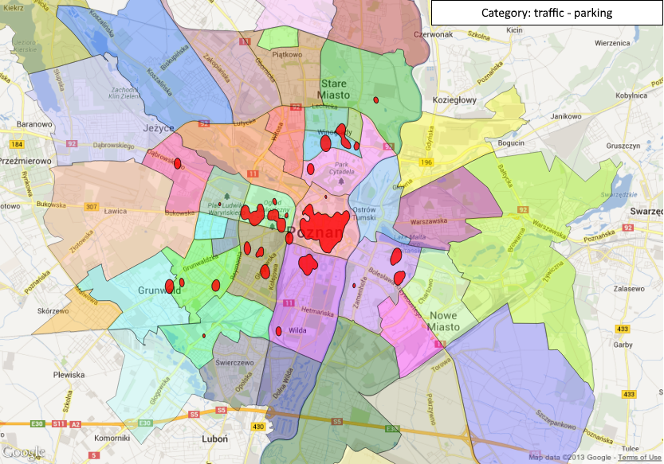

Scripts and data necessary to visualize on a map the interventions given by Municipal Police of Poznań
This repo contains scripts and data necessary to visualize on a map the interventions given by Municipal Police of Poznań.
Final maps are stored in qgis format.
Generated interventions HTML heat-maps for districts:
Generated images of QGIS interventions heat-maps for districts:

Time of reports:
Final generated statistics.
I assume you have your own raw copy of the list of MP interventions, say i.e. db/poznan-mp-interventions-2013-06-17-2013-10-09.csv.
Execution goes as follows:
extract_streets_and_places.R - looks for name of street or place in description of intervention,add_lat_lon.py - performs reverse geocoding using Google Maps API,clean_csv.py - removes unnecessary columns,add_district.py - adds name of district to intervention,create_html_visualizations.py - generates nice html heat-maps for districts (in Polish).add_lat_lon.py - sometimes Google returns that there is no lon/lat for given address; then just re-run the script.add_district.py - some of coordinates given by Google may lay outside the districts boundaries; the script will output ids of such interventions.